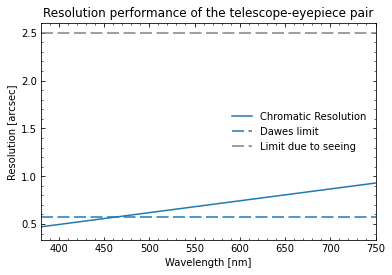
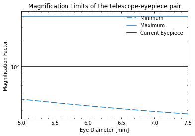
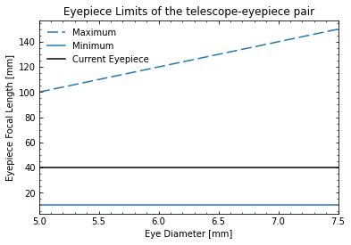

[ ]:
# uncomment the bottom line to install the package
# !pip install -i https://test.pypi.org/simple/ TCalc==1.1.1
Importing classes from the tcalc module
[1]:
from TCalc.tcalc import eyepiece, telescope, barlow_lens, focal_reducer
To quickly access the docstring, run help(classname)
[2]:
help(eyepiece)
Help on class eyepiece in module TCalc.tcalc:
class eyepiece(builtins.object)
| eyepiece(f_e, fov_e=50)
|
| Class representing a single eyepiece
| Args:
| f_e: focal length of the eyepiece (mm)
| fov_e: field of view of the eyepiece (deg). Defaults to 50 degrees.
|
| Methods defined here:
|
| __init__(self, f_e, fov_e=50)
| Initialize self. See help(type(self)) for accurate signature.
|
| ----------------------------------------------------------------------
| Data descriptors defined here:
|
| __dict__
| dictionary for instance variables (if defined)
|
| __weakref__
| list of weak references to the object (if defined)
For an example, let’s try to have estimate the specifications of Celestron’s 8 SE telescope.
[3]:
c8 = telescope(D_o=203.2, f_o=2032, user_D_eye=None, user_age=22) # adding configuration of 8in scope
omni_40 = eyepiece(40, 52) # defining 40 mm eyepiece
omni_25 = eyepiece(25, 52) # defining 25 mm eyepiece
Focal Ratio:'10.0'
True Focal Ratio:'10.0'
[5]:
# adding eyepiece to the telescope
c8.add_eyepiece(omni_40, id='omni_40', select=True)
c8.add_eyepiece(omni_25, id='omni_25', select=True)
[6]:
# listing all the added eyepieces in a table format
c8.list_eyepiece()
Currently included eyepieces:
Name Focal Length FOV
-------------- -------------- --------------
'omni_40' 40 mm 52 degrees
'omni_25' 25 mm 52 degrees
The currently selected eyepiece is 'omni_25'
Additional optical parts available:
Name Type Power
-------------- -------------- --------------
No optical part is selected
[7]:
# listing overall configuration of the telescope
c8.say_configuration() # remember this with 25 mm eyepiece
The telescope has the following layout:
Aperture diameter: 203.2 mm
Focal length: 2032 mm, corresponding to a focal ratio of 10.0
In good atmospheric conditions, the resolution of the telescope (Dawes limit) is 0.6 arcseconds
By wavelength, the resolution is
400 nm (blue): 0.5 arcsec
550 nm (green): 0.7 arcsec
700 nm (red): 0.9 arcsec
The maximum possible magnification factor is 406.4
This means the minimum compatible eyepiece focal length is 5.0 mm
The minimum magnification factor and corresponding maximum eyepiece focal length depend on the diameter of the observer's eye.
For a telescope user with an eye diameter of 7 mm (apropriate for an age around 25 years):
The minimum magnification factor is 29.0
This means the maximum compatible eyepiece focal length is 406.4 mm
The faintest star that can be seen by this telescope is 13.5 mag
The currently selected eyepiece is 'omni_25', which has the following layout:
Focal length: 25 mm
Field of view: 52 degrees
With this eyepiece:
The magnification factor is 81.3. This is compatible with the telescope limits.
The true field of view is 1 degrees
The exit pupil diameter is 2.5 mm
The faintest surface brightness that can be seen by this telescope is 12.50
[8]:
# selecting different eyepiece
c8.select_eyepiece('omni_40')
c8.say_configuration()
The telescope has the following layout:
Aperture diameter: 203.2 mm
Focal length: 2032 mm, corresponding to a focal ratio of 10.0
In good atmospheric conditions, the resolution of the telescope (Dawes limit) is 0.6 arcseconds
By wavelength, the resolution is
400 nm (blue): 0.5 arcsec
550 nm (green): 0.7 arcsec
700 nm (red): 0.9 arcsec
The maximum possible magnification factor is 406.4
This means the minimum compatible eyepiece focal length is 5.0 mm
The minimum magnification factor and corresponding maximum eyepiece focal length depend on the diameter of the observer's eye.
For a telescope user with an eye diameter of 7 mm (apropriate for an age around 25 years):
The minimum magnification factor is 29.0
This means the maximum compatible eyepiece focal length is 406.4 mm
The faintest star that can be seen by this telescope is 13.5 mag
The currently selected eyepiece is 'omni_40', which has the following layout:
Focal length: 40 mm
Field of view: 52 degrees
With this eyepiece:
The magnification factor is 50.8. This is compatible with the telescope limits.
The true field of view is 1 degrees
The exit pupil diameter is 4.0 mm
The faintest surface brightness that can be seen by this telescope is 32.00
[9]:
# calling individual functions
c8._compute_focal_ratio()
Focal Ratio:'10.0'
True Focal Ratio:'10.0'
[10]:
# adding additional optical parts
reducer = focal_reducer(.5) # defining focal reducer of 0.5x
barlow = barlow_lens(2) # defining barlow lens of 2x
[11]:
c8.add_optic(reducer,'reducer 1', select=True) # adding reducer to the telescope
c8.add_optic(barlow,'barlow 1', select=False) # adding barlow to the telescope
#if the magnifications limits get reached then warning will be printed.
Focal Ratio:'5.0'
True Focal Ratio:'10.0'
Note: The magnification produced by this eyepiece is not compatible with the telescope.
[12]:
c8.add_optic(reducer,'reducer 1', select=False)
c8.add_optic(barlow,'barlow 1', select=True)
Focal Ratio:'20.0'
True Focal Ratio:'10.0'
[13]:
# printing configuration again with barlow lens
c8.say_configuration()
The telescope has the following layout:
Aperture diameter: 203.2 mm
Focal length: 2032 mm, corresponding to a focal ratio of 10.0
'barlow 1', a Barlow lens, has been added to the optical path. This increases the focal length by 2
This results in
Focal length: 4064 mm, corresponding to a focal ratio of 20.0
In good atmospheric conditions, the resolution of the telescope (Dawes limit) is 0.6 arcseconds
By wavelength, the resolution is
400 nm (blue): 0.5 arcsec
550 nm (green): 0.7 arcsec
700 nm (red): 0.9 arcsec
The maximum possible magnification factor is 406.4
This means the minimum compatible eyepiece focal length is 10.0 mm
The minimum magnification factor and corresponding maximum eyepiece focal length depend on the diameter of the observer's eye.
For a telescope user with an eye diameter of 7 mm (apropriate for an age around 25 years):
The minimum magnification factor is 29.0
This means the maximum compatible eyepiece focal length is 406.4 mm
The faintest star that can be seen by this telescope is 13.5 mag
The currently selected eyepiece is 'omni_40', which has the following layout:
Focal length: 40 mm
Field of view: 52 degrees
With this eyepiece:
The magnification factor is 101.6. This is compatible with the telescope limits.
The true field of view is 1 degrees
The exit pupil diameter is 2.0 mm
The faintest surface brightness that can be seen by this telescope is 8.00
You can notice that if used a 2x barlow lens on a 40mm eyepiece, the brightness of the object will be decresead by 4 times!
This way you can simulate different scenarios and find out which accesories are optimal for your purpose. This will save you both time and money on costly accesories!
For advanced users, the plot functionality provides the plots of resolution performance, maginfication_limits and eyepiece_limits.
[14]:
c8.show_resolving_power()
c8.show_magnification_limits()
c8.show_eyepiece_limits()



[ ]: